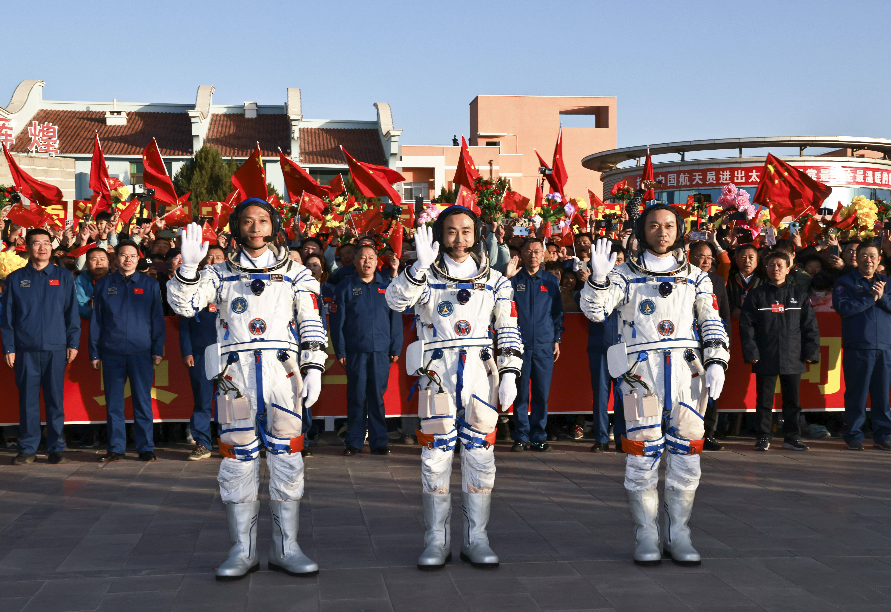

中国航天的辉煌成就
成就概览

从东方红一号卫星到如今的天问系列探测器，中国航天事业实现了跨越式发展。航天科技的进步不仅彰显了国家实力，还推动了科学与技术的全面发展。
载人航天

神舟系列飞船实现了中国人的飞天梦想，从神舟五号的首次载人飞行到神舟十四号，中国航天员不断突破，探索太空的奥秘。
月球探测

嫦娥系列任务带回了宝贵的月球样品，尤其是嫦娥四号成功实现人类首次月球背面软着陆，为人类了解月球背面环境提供了宝贵数据。
空间站建设

天宫空间站是中国在轨建造的首个长期有人驻留的空间站，天和核心舱、问天实验舱和梦天实验舱共同构成了这一太空实验室。
火星探测

天问一号任务成功实现了环绕、着陆和巡视三大目标，祝融号火星车为人类探索火星增添了新的篇章。